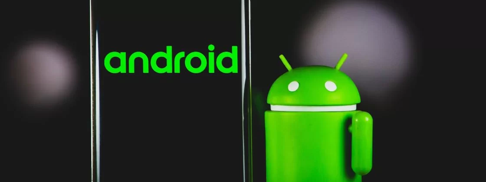
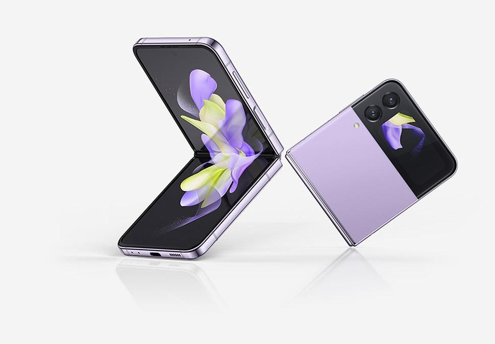

Android 13 vai tornar atualizações contínuas obrigatórias

O Android 13 vai trazer para os smartphones a obrigatoriedade das atualizações contínuas. Esse tipo de update nada mais é do que uma atualização em segundo plano, com os recursos aplicados após reinicialização do dispositivo.
Em versões anteriores do sistema operacional, alguns fabricantes de celulares, principalmente a Samsung, não permitiam esse tipo de atualização, mesmo sendo mais seguro e conveniente para o usuário. Agora, eles serão obrigados a aceitar.
A mudança obrigatória está no documento de definição de compatibilidade do Android para a versão 13 do software. O Google diz que "as implementações de dispositivos DEVEM oferecer suporte a atualizações do sistema A/B".
Os smartphones atuais da Samsung, incluindo dobráveis como o Galaxy z flip 4 5G, ignoram a atualização contínua.
A big tech destaca que as atualizações contínuas são um requisito para dispositivos lançados já com o Android 13. Os telefones mais antigos, que estrearam com versões anteriores, são a exceção.
O Google já havia dado indícios da obrigatoriedade no Android 11, mas acabou não vingando. As mudanças no Android 13, porém, devem fazer que o recurso seja implementado de vez.
A Samsung passou bastante tempo ignorando as atualizações contínuas, incluindo nos smartphones mais recentes, como os novos dobráveis e no Galaxy S22. Isso deve mudar já na linha a ser lançada no ano que vem.